Regression Analysis: Linear Models
The sample correlation (also known as the Pearson’s correlation coefficient) is a unitless statistic between \(-1\) and \(+1\) which quantifies the direction and strength of the linear relationship between two numeric variables \(X\) and \(Y\). It measures the linear relationship in any context, but it has no practical interpretation in the context. In this section, we discuss a linear model (also known as linear regression) which can be interpreted in the context.
1 Introduction to Linear Model
Suppose we want to explain a numeric variable \(Y\) by another numeric variable \(X\). In this case, \(Y\) is called the response variable (also called the outcome variable or dependent variable), and \(X\) is called the explanatory variable (also called the covariate, predictor or independent variable). Let \(\mu_Y\) denote the expectation (average) of \(Y\) given \(X\). The linear model assumes
\[\mu_Y = \beta_0 + \beta_1 X\]
where \(\beta_0\) and \(\beta_1\) are unknown model parameters (regression parameters) to be estimated based on a sample. This condition is referred to as the linearity condition.
- The first parameter \(\beta_0\) is called the model intercept (or the intercept parameter), and
- the second parameter \(\beta_1\) is referred as the model slope (or the slope parameter).
Mathematically, \(\mu_Y = \beta_0\) when \(X = 0\). Therefore, \(\beta_0\) is interpreted as the expectation of \(Y\) when \(X = 0\). Suppose we compare \(\mu_Y\) when \(X = x + 1\) and \(\mu_Y\) when \(X = x\). Then the difference in \(\mu_Y\) is
\[ \left[ \beta_0 + \beta_1 (x + 1) \right] - \left[ \beta_0 + \beta_1 x \right] = \beta_1 \, . \]
Therefore, \(\beta_1\) is interpreted as the difference in the expectation of \(Y\) associated with one unit difference in \(X\) (i.e., the change in the average of \(Y\) per one unit increase in \(X\)).
2 Case Study 1: Car Experiment (Speed and Stopping Distance)
The dataset \(\texttt{cars.csv}\) is a sample of \(n = 50\) cars. The column \(\texttt{speed}\) is the car’s speed before prior to hitting the brake in miles per hour (mph), and the column \(\texttt{dist}\) is the stopping distance in feet. The speed of a car (between 4 and 25 mph) was randomly assigned to each car in the experiment, and the stopping distance was measured. Of course, the experimenters hypothesized that the expected stopping distance increases with respect to the speed, and they wanted to estimate the slope parameter (the change in the expected distance to stop per 1 mph increase in the speed).
cars <- read_csv("data/cars.csv", show_col_types = FALSE)
head(cars)# A tibble: 6 × 2
speed dist
<dbl> <dbl>
1 4 2
2 4 10
3 7 4
4 7 22
5 8 16
6 9 10df_stats( ~speed, data = cars ) ### descriptive statistics for speed response min Q1 median Q3 max mean sd n missing
1 speed 4 12 15 19 25 15.4 5.287644 50 0df_stats( ~dist, data = cars ) ### descriptive statistics for dist response min Q1 median Q3 max mean sd n missing
1 dist 2 26 36 56 120 42.98 25.76938 50 0cor( dist ~ speed, data = cars ) ### sample correlation[1] 0.8068949gf_point( dist ~ speed, data = cars,
title = "Speed vs. Stopping Distance of 50 Cars",
xlab = "Speed (mph)",
ylab = "Stopping distance (feet)" ) |>
gf_lm()### scatterplot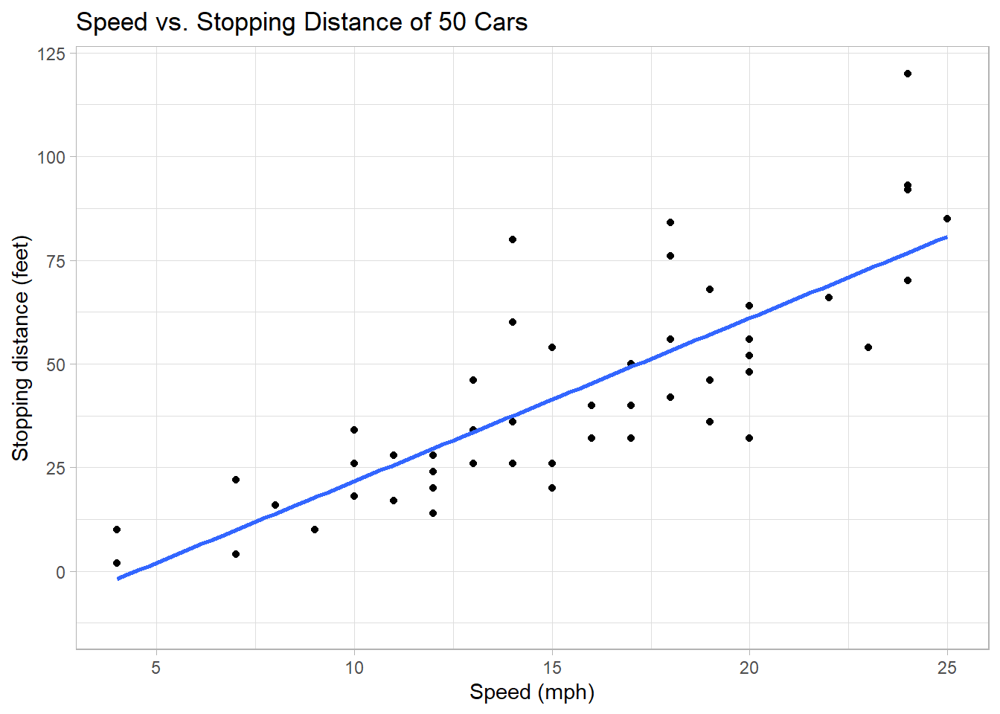
model_cars <- lm( dist ~ speed, data = cars ) ### fit linear model
coef(model_cars) ### estimated intercept and slope(Intercept) speed
-17.579095 3.932409 Under the linear model, the unknown intercept parameter \(\beta_0\) is estimated at –17.5791 feet, and we write this result as \(b_0 = -17.5791\).
Interpret the intercept in context. Is it practical?
NoteAnswer
When the car’s is not in motion (\(\texttt{speed} = 0\)), the expected stopping distance is estimated at 3.9324 feet. This interpretation does not have practical sense, but the intercept is needed to accurately estimate the slope parameter (the experimenters’ primary interest).
The unknown slope parameter \(\beta_1\) is estimated at 3.9324, and we write \(b_1 = 3.9324\).
Interpret the slope in context.
NoteAnswer
Under the linearity condition, the expected stopping distance changes by +3.9324 feet per one mph increase in the car’s speed.
The line equation,
\[y_{dist} = -17.5791 + 3.9324x_{speed}\],
is called the regression line or fitted line. If a car is driven at 25 mph (the speed limit at a residential area), the expected stopping distance is estimated at \(-17.5791 + 3.9324(25) = 80.7\) feet. This value (80.7) is called the fitted value or predicted value at \(x_{speed} = 25\).
3 Ordinary Least Square Estimation
In the case study introduced in Section 2, we used the lm() function to estimate the unknown model parameters \(\beta_0\) and \(\beta_1\). Among infinitely many choices, why did it estimate \(b_0 = -17.5791\) and \(b_1 = 3.3924\)?
At each value of \(x_{speed}\), the fitted value (predicted value) can be calculated. The difference between the observed value and the fitted value of \(y_{dist}\) is called the residual, and the residual for each data point can be calculated as follows.
cars |>
mutate(y_hat_dist = fitted(model_cars),
residual = residuals(model_cars)) |>
slice_head(n = 10)# A tibble: 10 × 4
speed dist y_hat_dist residual
<dbl> <dbl> <dbl> <dbl>
1 4 2 -1.85 3.85
2 4 10 -1.85 11.8
3 7 4 9.95 -5.95
4 7 22 9.95 12.1
5 8 16 13.9 2.12
6 9 10 17.8 -7.81
7 10 18 21.7 -3.74
8 10 26 21.7 4.26
9 10 34 21.7 12.3
10 11 17 25.7 -8.68The third car, which was driven at \(x_{speed} = 7\), needed \(y_{dist} = 4\) feet to stop, and the fitted value is \(\hat{y}_{dist} = 9.9478\) feet under the model, so the residual is \(4 - 9.9478 = -5.9478\).
The fourth car, which was driven at \(x_{speed} = 7\) as well, needed \(y_{dist} = 22\) feet to stop, and the fitted value is \(\hat{y}_{dist} = 9.9478\) feet, so the residual is \(22 - 9.9478 = +12.0522\). Likewise, we can calculate 50 residuals, and the sum of all squared residuals is \(SSE = 11353.52\), and it is referred to as the sum of squared error (SSE).
cars |>
mutate(y_hat_dist = fitted(model_cars),
residual = residuals(model_cars)) |>
summarize(sse = sum(residual^2))# A tibble: 1 × 1
sse
<dbl>
1 11354.The lm() function chooses \(b_0\) and \(b_1\) (estimates for unknown parameters \(\beta_0\) and \(\beta_1\)) which minimize the SSE, and this method of estimating \(\beta_0\) and \(\beta_1\) is referred to as the ordinary least square estimation or simply OLSE. (In some sense, it is a best line through all data points.)
Let \(X\) and \(Y\) be the explanatory variable and response variable, respectively. Let \(\bar{X}\), \(\bar{Y}\), \(S_X\), \(S_Y\), and \(R_{XY}\) be the sample means, sample standard deviations, and sample correlation of \(X\) and \(Y\), respectively. Given these five statistics, the OLSE estimates \(\beta_1\) and \(\beta_0\) as follows:
\[b_1 = R_{XY} \left( \frac{S_Y}{S_X} \right)\] and
\[b_0 = \bar{Y} - b_1 \, \bar{X}\]
cars |>
summarize(b_1 = cor(speed ~ dist)*sd(~dist)/sd(~speed),
b_0 = mean(~dist) - b_1*mean(~speed))# A tibble: 1 × 2
b_1 b_0
<dbl> <dbl>
1 3.93 -17.6The above results (b_0 and b_1) are the same as coef(model_cars) in Section 2.
4 Hypothesis Testing for Slope
In the linear model, \(\mu_Y = \beta_0 + \beta_1 X\), the slope parameter \(\beta_1\) quantifies the linear relationship between \(X\) and \(Y\) in the context (i.e., the expected change of \(Y\) per one unit increase in \(X\)). The research question can be addressed by hypothesis testing for \(\beta_1\).
The null hypothesis is \(H_0:\beta_1 = 0\) that the expectation of \(Y\) does not change with respect to \(X\). The alternative hypothesis is one of the following three forms.
\(H_1\): \(\beta_1 > 0\) (right-sided test; the expectation of \(Y\) increases with respect to \(X\))
\(H_1\): \(\beta_1 < 0\) (left-sided test; the expectation of \(Y\) decreases with respect to \(X\))
\(H_1\): \(\beta_1 \ne 0\) (two-sided test; the expectation of \(Y\) increases or decreases with respect to \(X\))
Under the condition of \(H_0\), a test statistic is calculated as follows:
\[ T = \frac{b_1 - 0}{\texttt{SE}} \tag{1}\]
where the standard error (\(\texttt{SE}\)) is given by
\[ \texttt{SE} = \sqrt{ \frac{1}{n-2} \cdot \frac{ \texttt{SS}_E }{ \sum_{i=1}^n (X_i - \bar{X})^2 } } \tag{2}\]
The null distribution of \(T\) is the T distribution with \(\nu\) degrees of freedom, \(T \sim \mathcal{T}(\nu)\) where \(\nu = n - 2\).
As in the one-sample t-test, two-sample t-test, and correlation, the numerator of the T statistic (Equation 1) quantifies he difference between the point estimate for \(\beta_1\) and the null value, and the denominator (\(\texttt{SE}\)) quantifies uncertainty associated with the point estimation for \(\beta_1\).
Given \(T = \texttt{t}\), the calculation of p-value depends on the direction of \(H_1\) as follows:
- Right-sided test: p = \(1 - \texttt{pt}(\texttt{t}, \nu)\)
- Left-sided test: p = \(\texttt{pt}(\texttt{t}, \nu)\)
- Two-sided test: p = \(2 * \texttt{pt}(\texttt{t}, \nu)\) if \(\texttt{t} < 0\) or p = \(2 * (1 - \texttt{pt}(\texttt{t}, \nu))\) if \(\texttt{t} > 0\)
If p-value is less than a fixed significance level of \(\alpha\), we conclude \(H_1\). Otherwise, we conclude \(H_0\).
In the previous case study (Section 2), the experimenters hypothesized that the expected stopping distance increases with respect to the speed. Their hypothesis for \(\beta_1\) can be formulated as \(H_0\): \(\beta_1 = 0\) versus \(H_1\): \(\beta_1 > 0\) (right-sided test), and it can be tested at a significance level of \(\alpha = 0.05\). The lm() function already calculated the \(T\) statistic and p-value, and they can be printed as follows.
summary(model_cars)
Call:
lm(formula = dist ~ speed, data = cars)
Residuals:
Min 1Q Median 3Q Max
-29.069 -9.525 -2.272 9.215 43.201
Coefficients:
Estimate Std. Error t value Pr(>|t|)
(Intercept) -17.5791 6.7584 -2.601 0.0123 *
speed 3.9324 0.4155 9.464 1.49e-12 ***
---
Signif. codes: 0 '***' 0.001 '**' 0.01 '*' 0.05 '.' 0.1 ' ' 1
Residual standard error: 15.38 on 48 degrees of freedom
Multiple R-squared: 0.6511, Adjusted R-squared: 0.6438
F-statistic: 89.57 on 1 and 48 DF, p-value: 1.49e-12The T statistic for the slope parameter is \(T = 9.4640\), and the R reports the two-sided p-value, p = \(1.4398 \times 10^{-12}\), by default. Given these results, how can we can calculate the right-sided p-value?
Interpret the p-value.
Evaluate the strength of evidence against the null using \(\alpha = 0.05\)
5 Confidence Interval for Slope
The p-value of the hypothesis testing for \(\beta_1\) quantifies the strength of evidence for \(H_1\) under the condition of \(H_0\), but it does not measure the linear relationship in the context. We estimated \(\beta_1\) using the point estimation, \(b_1 = 3.9324\), and we can calculate the confidence interval (CI) for \(\beta_1\). The CI accounts for a fixed confidence level (\(1 - \alpha\)) and the standard error (\(\texttt{SE}\)) as follows:
\[ b_1 \, \pm c \cdot \texttt{SE} \]
where \(c = \texttt{qt}( 1 - \alpha/2, \nu )\) is the critical value, where \(\nu = n - 2\) is the degrees of freedom, and \(\texttt{SE}\) is the standard error given in Equation 2. The 95% CI for \(\beta_1\) can be calculated as follows using the confint() function.
confint(model_cars, "speed", level = 0.95 ) 2.5 % 97.5 %
speed 3.096964 4.767853Interpret the confidence interval in context.
6 R-square (Coefficient of Determination)
A good linear model explains a large proportion of the variance of \(Y\) by \(X\).
If the null hypothesis \(H_0\): \(\beta_1 = 0\) is true, a best method to predict \(Y\) is the sample mean \(\bar{Y}\).
If \(H_0\) is not true, a best method to predict \(Y\) given \(X\) is the fitted line \(b_0 + b_1 X\).
Let \(\texttt{SS}_{E,0}\) be the sum of squared residuals under \(H_0\) and \(\texttt{SS}_{E,1}\) be the sum of squared residuals under \(H_1\). They can be calculated as follows.
model_cars <- lm( dist ~ speed, data = cars ) ### fit linear model
ybar <- mean(~dist, data = cars)
sse0 <- sum( ~( dist - ybar ) ^ 2 , data = cars) ### sum of squared residuals under H0
sse0[1] 32538.98sse1 <- sum( residuals(model_cars) ^ 2 ) ### sum of squared residuals under H0
sse1[1] 11353.52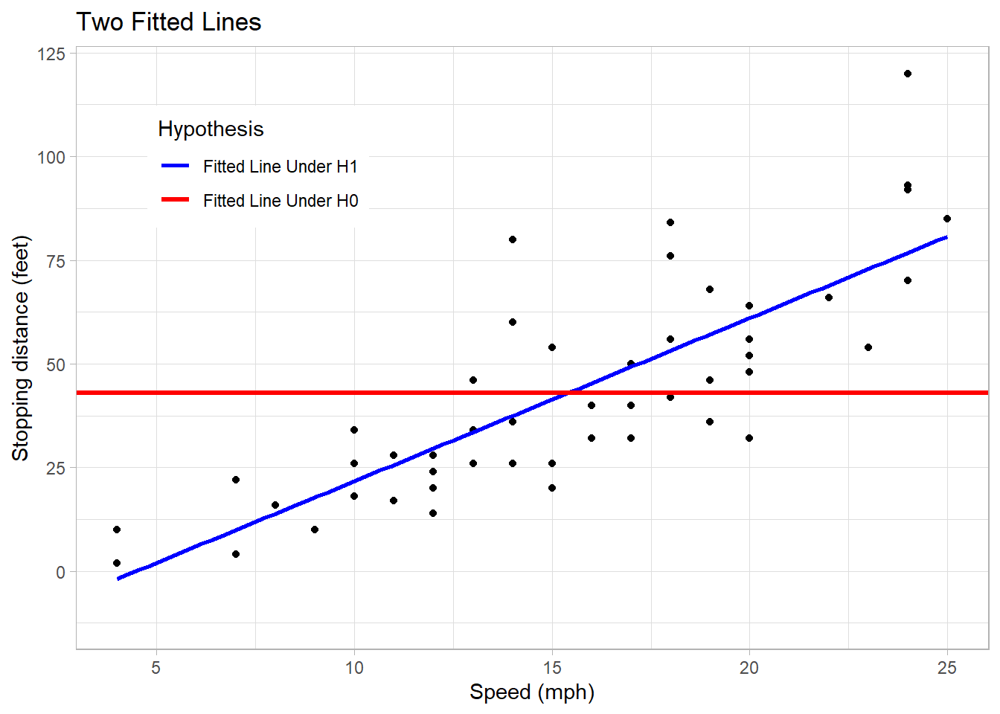
In general, \(\texttt{SS}_{E,1}\) is smaller than \(\texttt{SS}_{E, 0}\). Under the linear model, \(\texttt{SS}_{E,0} - \texttt{SS}_{E, 1}\) is the sum of squared residuals explained by \(X\), and \(\texttt{SS}_{E,1}\) is the remaining sum of squared residuals which cannot be explained by \(X\). The R-square (also referred to as the coefficient of determination) is defined as
\[ R^2 = \frac{ \texttt{SS}_{E, 0} - \texttt{SS}_{E, 1} }{ \texttt{SS}_{E, 0} } = 1 - \frac{ \texttt{SS}_{E, 1} }{ \texttt{SS}_{E, 0} } \, . \]
It is interpreted as the proportion of variance of \(Y\) explained by \(X\) under the linear model. It is a measure between 0 and 1, and a high value of R-square implies that the linear model is good at explaining the variability of \(Y\) by \(X\).
r_square = 1 - sse1 / sse0
r_square[1] 0.6510794In the car experiment, under the linear model, about 65.1% of the variance of stopping distance is explained by the speed prior to hitting the brake, and the remaining 34.9% of the variance of stopping distance is unexplained. There may be other factors explaining the remaining variance of stopping variance such as the condition of tires and the weight of a car.
The R-square can be calculated using the \(\texttt{rsquared}\) function as shown below.
rsquared( summary(model_cars) )[1] 0.65107947 Assessing Linear Model Conditions
As generic notations let \(Y\) be a response variable and \(X\) be an explanatory variable where both \(X\) and \(Y\) are numeric. Let \(\mu_Y\) be the expectation (average) of \(Y\) as a function of \(X\). The linear model assumes \(\mu_Y = \beta_0 + \beta_1 X\), and this condition is referred to as the linearity condition. The response variable \(Y\) is a random variable even though the value of \(X\) is fixed. For instance, the stopping distances of two cars were 4 feet and 22 feet even though they were driven at the same speed of 7 mph. (Recall the case study in Section 3.) In this regard, the linear model can be represented as follows:
\[ Y = \mu_Y + \epsilon = \beta_0 + \beta_1 X + \epsilon \, . \]
The above presentation implies that \(Y\) is the sum of two components:
\(\mu_Y = \beta_0 + \beta_1 X\) is referred to as the deterministic component, the expectation of \(Y\) given \(X\), and
\(\epsilon = Y - \mu_Y\) is referred to as the stochastic component (or simply called the random error).
In addition to the linearity condition, there are normality condition, constant variance condition, and independence condition of \(\epsilon\). The statistical inference for \(\beta_1\) (hypothesis testing and confidence interval) is valid (trustworthy) under these four conditions, so it is important to assess them. The following subsections discuss how to assess each condition using the case study (car’s speed and stopping distance) as an example.
7.1 Linearity Condition
The linearity condition simply implies that \(\mu_Y\) is a linear function of \(X\), that is \(\mu_Y = \beta_0 + \beta_1 X\). (There is a more broad meaning of the linearity condition, and it is not discussed here.) If this condition fails, the interpretation of \(\beta_1\) will be inaccurate, and there will be biased estimation of \(\mu_Y\) given \(X\). The linearity can be assessed visually as follows.
gf_point( dist ~ speed, data = cars,
title = "Scatterplot of X and Y",
xlab = "Speed (mph)",
ylab = "Stopping distance (feet)" )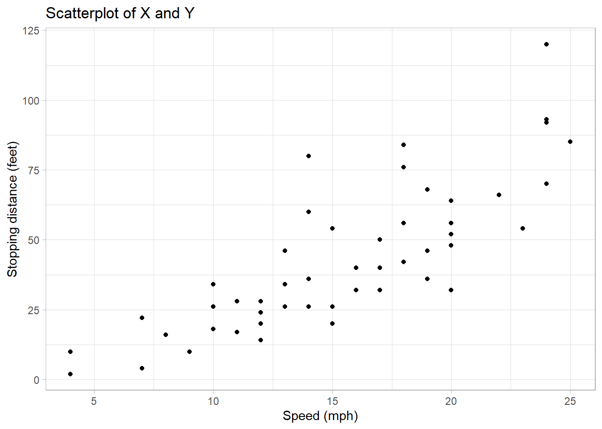
Based on the scatterplot, is a linear relationship reasonable?
7.2 Constant Variance Condition
The constant variance condition (also called the homogeneity condition) implies that the variance of random error \(\epsilon\) is constant with respect to \(X\). To look at this we again use the Residual vs. Fitted plot.
plot(model_cars, 1, add.smooth = FALSE)
There is a mild pattern that the variance of residuals increases with respect to fitted values, and it is a mild sign of violating the constant variance condition.
7.3 Normality Condition
The normality condition implies that the random error \(\epsilon\) follows a normal distribution. We can use residuals to assess the normality condition. If the normality condition is true, the Q-Q plot of residuals will be fairly straight, following the 1:1 line.
plot(model_cars, 2) ### Q-Q plot of residuals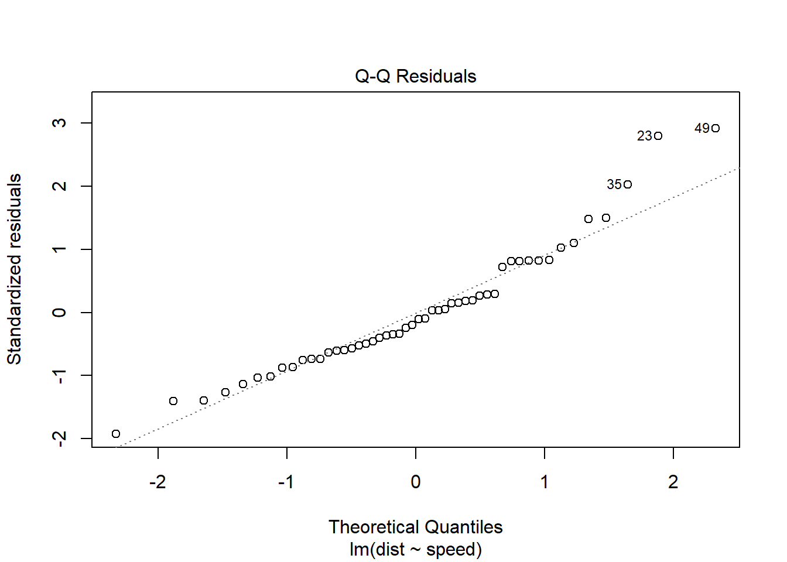
The are few data points (numbered 23, 35, and 49) deviating from the straight line of the Q-Q plot. A mild violation of the normality condition is tolerable when the sample size is large (30 or larger as a rule of thumb), so we may not worry too much about the above result.
7.4 Independence Condition
Loosely speaking, the independence condition implies that random error \(\epsilon\) is purely random and unrelated between data points. The independence condition is usually true in a simple random sample or an experimental study, unless an experiment is poorly designed. If the independence condition is true, there should be no pattern of residuals with respect to the values of \(X\) or fitted values.
plot(model_cars, 1, add.smooth = FALSE)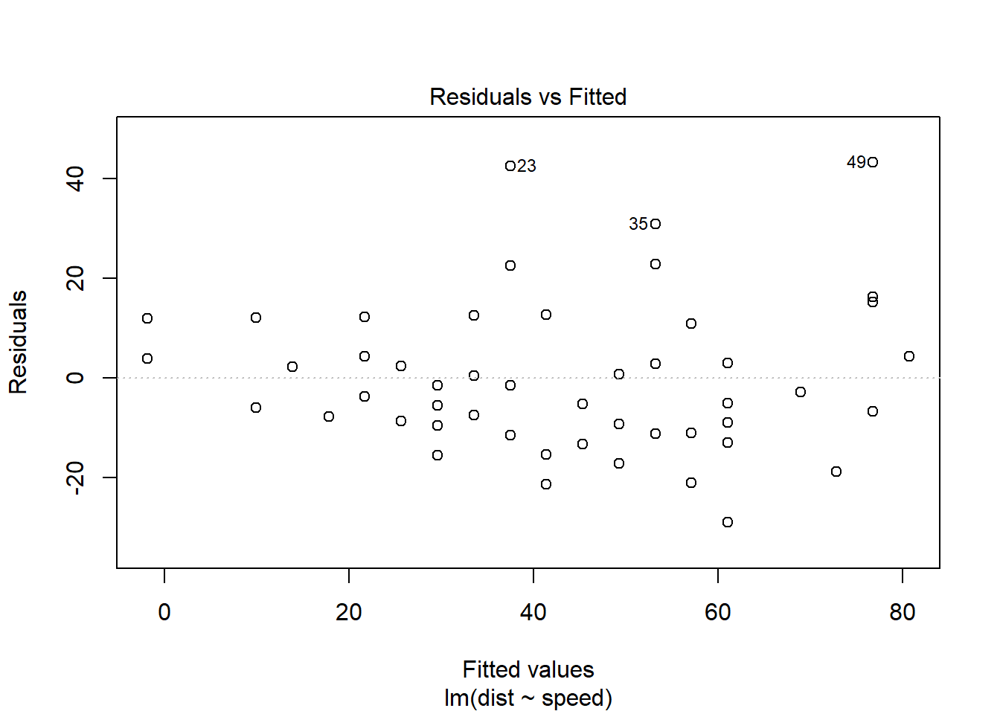
7.5 Cook’s Distance
If all conditions are satisfied or violation of any condition(s) is mild, all data points should have nearly the same influence to fitted line. The influence of the \(i^{\mathrm{th}}\) data point can be measured by comparing the fitted line with all data points and the fitted line with all data points except the \(i^{\mathrm{th}}\) data point. If the two fitted lines are significantly different, the \(i^{\mathrm{th}}\) data point is called a highly influential point. The Cook’s distance measures the influence of each data point, and a data point with a Cook’s distance of 0.5 or above is considered to be a highly influential point. (The detailed calculation of Cook’s distance is not a scope of discussion here.) In the figure below, the most influential point is the \(49^{\mathrm{th}}\) data point which has a Cook’s distance between 0.3 and 0.4, so any highly influential point is not detected in the linear model.
plot(model_cars, 4)
plot(model_cars, 5)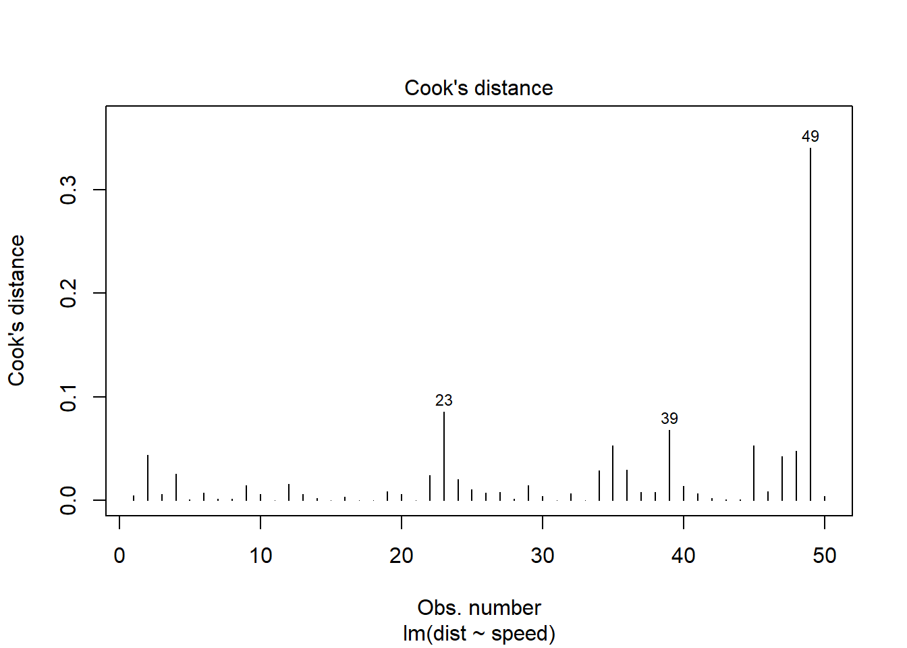
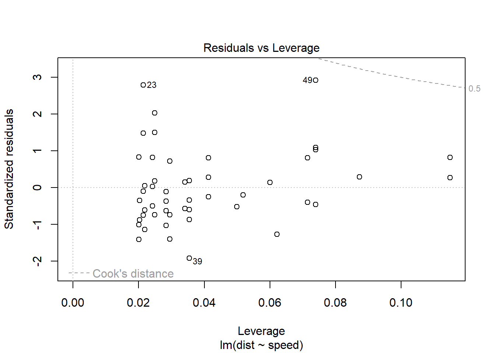
8 Case Study 2: Animal Species (Body Weight and Brain Weight)
This case study demonstrates the importance of linear model conditions, impact of highly influential points, and how to handle violations of the conditions. Scientists have believed that larger animal species have bigger brains, and our goal is to test this hypothesize under the linear model conditions. The dataset \(\texttt{animal.csv}\) is a sample of 65 randomly selected animal species. The column \(\texttt{body}\) is the body weight of an animal species in kilograms, and the column \(\texttt{brain}\) is the brain weight of the animal species in grams. In this analysis, the response variable is \(\texttt{brain}\), and the explanatory variable is \(\texttt{body}\).
animal <- read_csv( "data/animal.csv", show_col_types = FALSE ) ### read data
head( animal, 5 ) ### first 5 lines# A tibble: 5 × 3
name body brain
<chr> <dbl> <dbl>
1 Lesser short-tailed shrew 0.005 0.14
2 Little brown bat 0.01 0.25
3 Big brown bat 0.023 0.3
4 Mouse 0.023 0.4
5 Musk shrew 0.048 0.33tail( animal, 5 ) ### last 5 lines# A tibble: 5 × 3
name body brain
<chr> <dbl> <dbl>
1 Asian elephant 2547 4603
2 African elephant 6654 5712
3 Triceratops 9400 70
4 Dipliodocus 11700 50
5 Brachiosaurus 87000 154.Here are the summary statistics:
df_stats( ~body, data = animal ) ### descriptive statistics of body response min Q1 median Q3 max mean sd n missing
1 body 0.005 0.75 3.5 60 87000 1852.692 10913.66 65 0df_stats( ~brain, data = animal ) ### descriptive statistics of brain response min Q1 median Q3 max mean sd n missing
1 brain 0.14 5 21 157 5712 274.2895 909.1702 65 0cor(brain ~ body, data = animal)[1] 0.05166368Here is the linear model:
model_animal <- lm( brain ~ body, data = animal ) ### fit linear model
summary(model_animal)
Call:
lm(formula = brain ~ body, data = animal)
Residuals:
Min 1Q Median 3Q Max
-486.3 -262.4 -249.3 -109.7 5417.0
Coefficients:
Estimate Std. Error t value Pr(>|t|)
(Intercept) 2.663e+02 1.152e+02 2.313 0.024 *
body 4.304e-03 1.048e-02 0.411 0.683
---
Signif. codes: 0 '***' 0.001 '**' 0.01 '*' 0.05 '.' 0.1 ' ' 1
Residual standard error: 915.1 on 63 degrees of freedom
Multiple R-squared: 0.002669, Adjusted R-squared: -0.01316
F-statistic: 0.1686 on 1 and 63 DF, p-value: 0.6827Here is the scatterplot:
gf_point( brain ~ body, data = animal,
title = "Sample of 65 Animal Species",
xlab = "Body weight (kg)",
ylab = "Brain weight (g)" ) |>
gf_lm()### scatterplot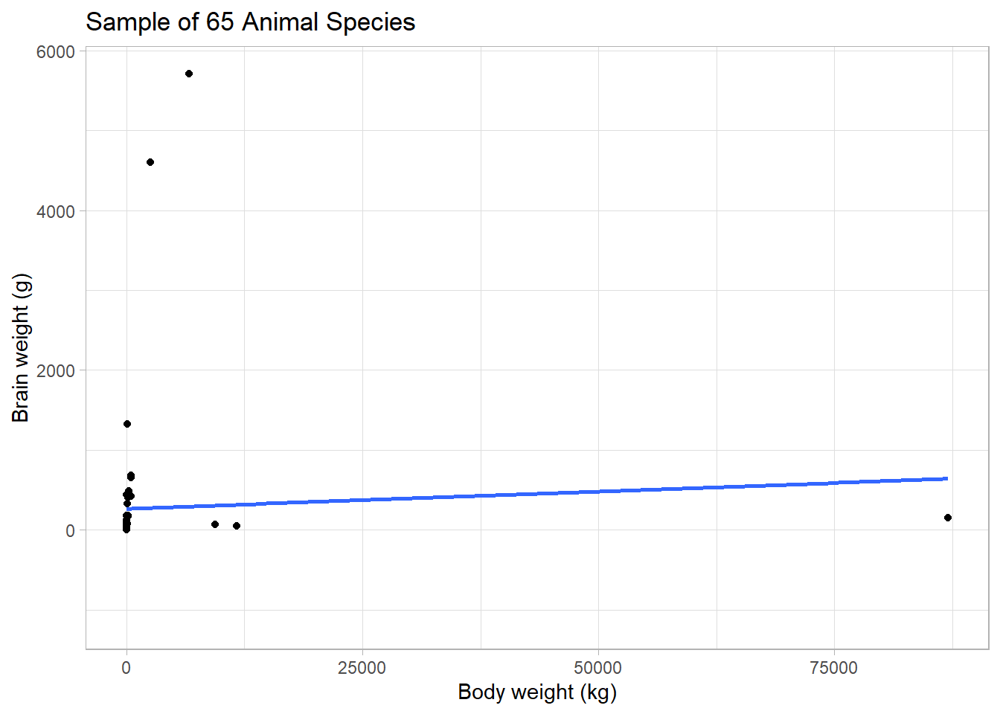
Here are the other condtion plots:
plot(model_animal, 1, add.smooth = FALSE)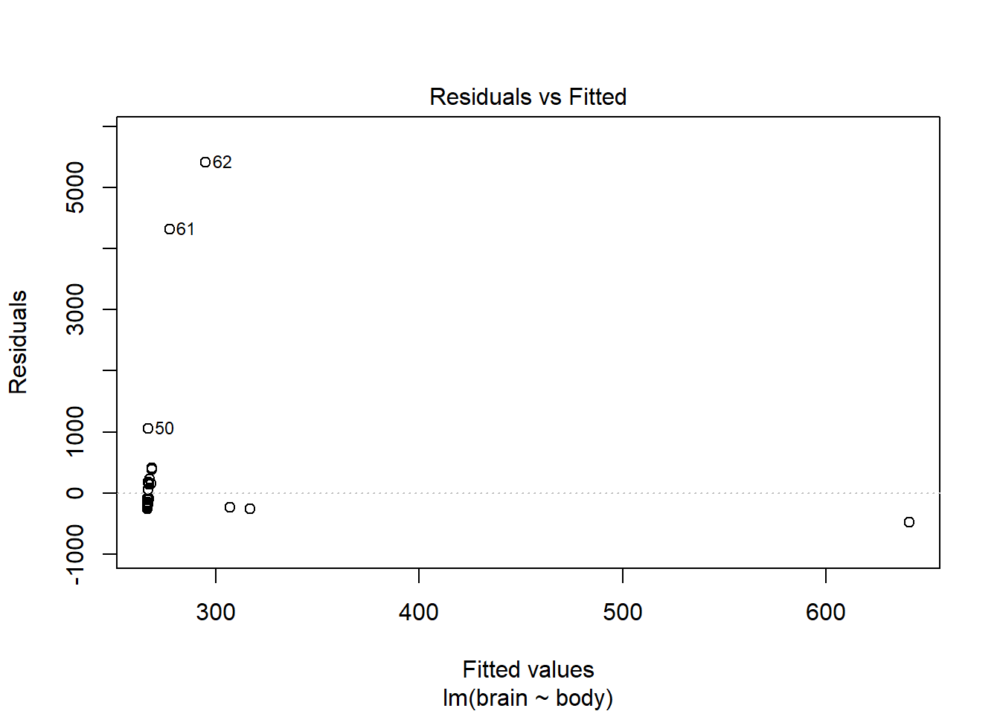
plot(model_animal, 2)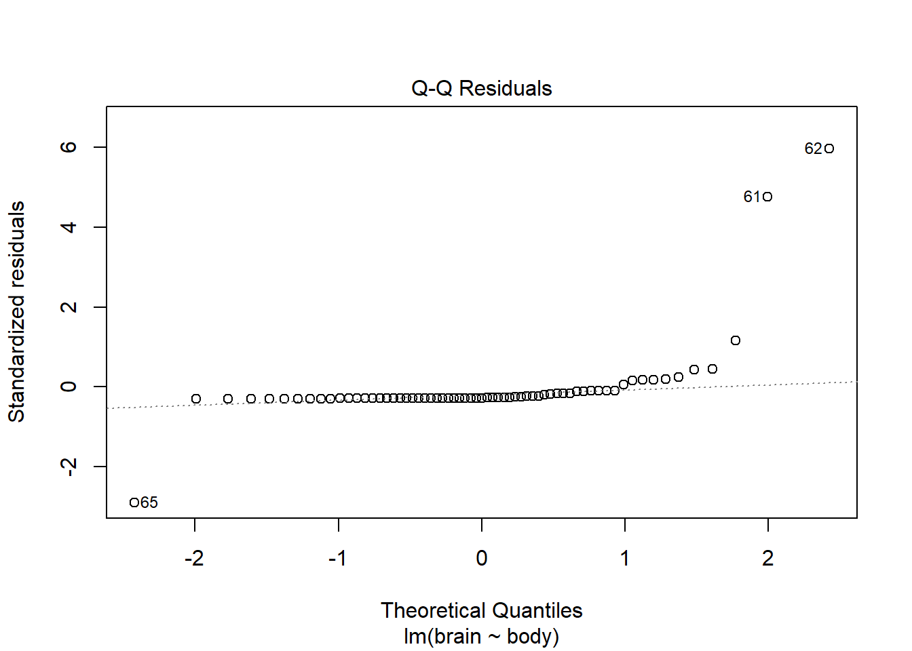
plot(model_animal, 4)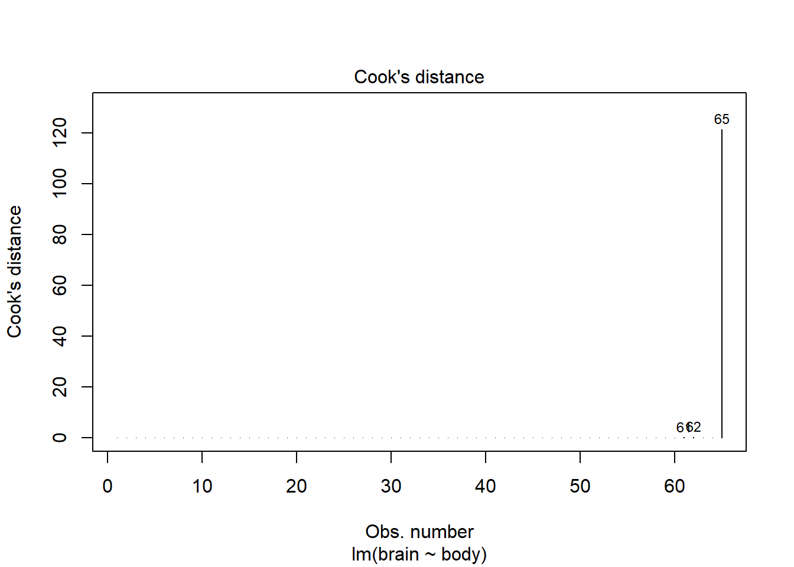
plot(model_animal, 5)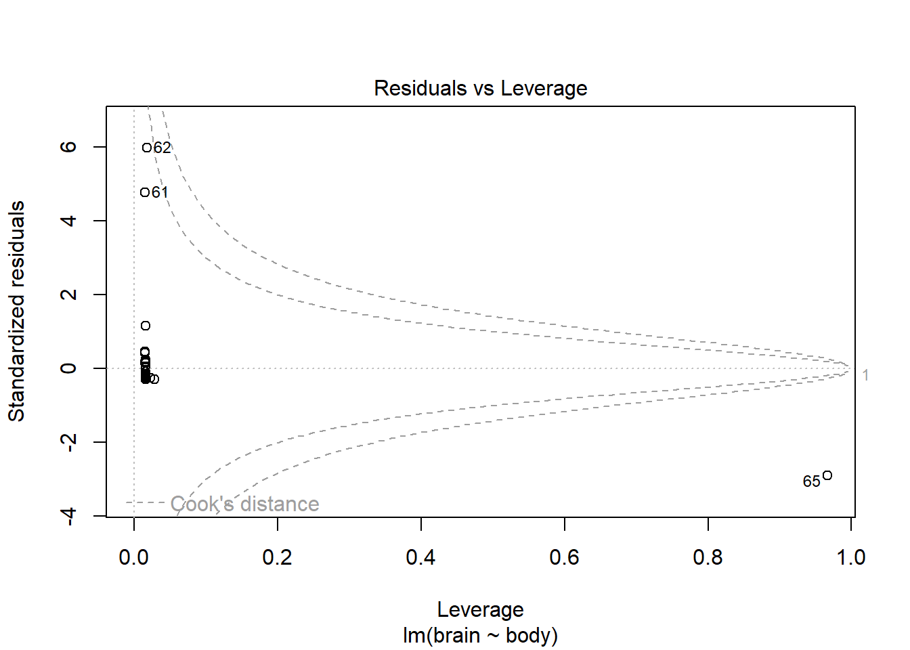
What do you notice? What might be the issue?
To be continued….
9 Wrap-Up
In your groups work on the following problems. You can check your answers below. All calculations (numeric answers) must be rounded to four decimals (e.g., 0.6667 instead of 2/3, 0.5 or 0.5000 instead of 1/2) unless specified. Be ready to show your work on the board.
9.0.1 Problem 1
The dataset \(\texttt{bac.csv}\) is a sample of 16 college students who volunteered to participate in an experiment. Each student was given a random amount of beer, and the blood alcohol content (BAC) was measured in percent (%). The column \(\texttt{beers}\) is the assigned number of 12-ounce beer (e.g., \(\texttt{beers} = 3\) means 36 ounces of beer), and the column \(\texttt{bac}\) is the BAC measured after drinking the assigned amount of beer.
Download data here: bac.csv
- Multiple-choice: Which of the following column names of \(\texttt{bac.csv}\) is the response variable?
(A) \(\texttt{id}\)
(B) \(\texttt{beers}\)
(C) \(\texttt{bac}\)
(D) All of the above
(E) None of the above
- Multiple-choice: Which is the explanatory variable?
(A) \(\texttt{id}\)
(B) \(\texttt{beers}\)
(C) \(\texttt{bac}\)
(D) All of the above
(E) None of the above
Calculate the sample size.
Calculate the sample range of \(\texttt{beer}\). (Recall: range = maximum – minimum)
Using the fitted line, estimate the difference in the expected BAC per 12-ounce of beer.
Multiple-choice: Which of the following is the p-value for testing \(H_0\): \(\beta_1 = 0\) versus \(H_1\): \(\beta_1 > 0\)?
(A) 0.299043
(B) 0.149521
(C) 0.0042
(D) 0.000042
(E) 0.000021
Calculate the lower bound of 95% CI for the slope.
Calculate the lower bound of 95% CI for the slope.
Multiple-choice: Let \((L, U)\) be the 95% CI calculated in the previous parts. Which of the following is a correct interpretation of the 95% CI?
(A) 95% of college students will have BAC between \(L\) and \(U\) at a confidence level of 0.95.
(B) 95% of college students will see an increase of BAC between \(L\) and \(U\) per 12-ounce of beer.
(C) The true difference in the expected BAC is between \(L\) and \(U\) per 12-ounce of beer at a confidence level of 0.95.
(D) (A) and (C)
(E) (B) and (C)
Using the fitted line, estimate the expected BAC when a college student drinks 100 ounces of beer.
DUI is defined as BAC above 0.01% for drivers under 21 years old. Using the fitted line, estimate the minimum amount of beer in ounces that will results in DUI under 21 years old.
Calculate the R-square. (It must be between 0 and 1, not in percent.)
Multiple-choice: Which of the following best describes the interpretation of R-square in the context?
(A) the proportion of the variance of BAC unexplained by the amount of beer
(B) the proportion of the variance of the amount of beer unexplained by BAC
(C) the proportion of the mean of BAC explained by the amount of beer
(D) the proportion of the mean of the amount of beer explained by BAC
(E) the proportion of the variance of BAC explained by the amount of beer
(F) the proportion of the variance of the amount of beer explained by BAC
- Multiple-choice: Which of the following linear model conditions appears to be violated most severely?
(A) linearity condition
(B) constant variance condition
(C) normality condition
(D) independence condition
(E) All of the above
- How many highly influential points are detected according to the Cook’s distance?
10 Assignment
You must submit an html file generated by Quarto in Canvas. While you can check numeric answers here, complete work is expected for the problems below. The assignment will be graded based on the quality of the html document (e.g., completeness and organization. If an R code which is not demonstrated in the course material is used, it will be regarded as use of unacceptable sources and/or aids, and it will result in zero in the assignment. Such a case may be reported according to the CSUMB Academic Integrity Policy.
10.0.1 Problem 1
Francis Galton (1822-1911) believed that human’s physical characteristics inherit from biological parents. The dataset \(\texttt{Galton.csv}\) is a sample that Galton collected to study the relationship between the height of a child and the height of the child’s parents. The column \(\texttt{child}\) is the height of a child in inches (when he or she is grown up), and the column \(\texttt{midparent}\) is a midpoint of mother’s and father’s heights (\(\texttt{midparend} = \texttt{father} + 1.08 \, \texttt{mother}\) to adjust the difference between male and female). The objective of data analysis is to test whether or not children are expected to be tall (or short) when their biological parents are tall (or short). Let \(Y\) be the response variable and \(X\) be the explanatory variable, and assume \(\mu_Y = \beta_0 + \beta_1 X\).
Download data here: Galton.csv
- Multiple-choice: Which column name represents the response variable?
(A) \(\texttt{father}\); (B) \(\texttt{mother}\); (C) \(\texttt{midparent}\); (D) \(\texttt{sex}\); (E) \(\texttt{child}\)
- Multiple-choice: Which column name represents the explanatory variable?
(A) \(\texttt{father}\); (B) \(\texttt{mother}\); (C) \(\texttt{midparent}\); (D) \(\texttt{sex}\); (E) \(\texttt{child}\)
- Multiple-choice: Which of the following represents the null hypothesis \(H_0\)?
(A) \(\beta_0 = 0\); (B) \(\beta_0 > 0\); (C) \(\beta_0 < 0\); (D) \(\beta_0 \ne 0\); (E) \(\beta_1 = 0\); (F) \(\beta_1 > 0\); (G) \(\beta_1 < 0\); (H) \(\beta_1 \ne 0\)
- Multiple-choice: Which of the following represents the alternative hypothesis \(H_1\)?
(A) \(\beta_0 = 0\); (B) \(\beta_0 > 0\); (C) \(\beta_0 < 0\); (D) \(\beta_0 \ne 0\); (E) \(\beta_1 = 0\); (F) \(\beta_1 > 0\); (G) \(\beta_1 < 0\); (H) \(\beta_1 \ne 0\)
Provide the scatterplot and superimpose the fitted line. (Include the title and labels with units.)
Report the p-value for the hypothesis testing for the parameter of interest.
Multiple-choice: What is the conclusion at a significance level of \(\alpha = 0.05\)?
(A) \(H_0\)
(B) \(H_1\)
Calculate the lower bound of 95% CI for the slope.
Calculate the lower bound of 95% CI for the slope.
Calculate the R-square.
Provide graphics to assess the four linear model conditions.
True or false: There is strong evidence of violating the linearity condition.
True or false: There is strong evidence of violating the constant condition.
True or false: The Shapiro-Wilk test results in a p-value less than 0.05, but violation of normality condition is tolerable because the sample size is larger than 30.
True or false: There is strong evidence of violating the independence condition.
True or false: There is at least one highly influential point according to the Cook’s distance.
State the conclusion in the context. Your concluding statement shall include: concluding statement of the hypothesis testing (including T, DF, and p), interpretations of the point estimate and 95% CI, interpretation of R-square, and linear model conditions.
10.0.2 Problem 2
The dataset \(\texttt{cigarettes.csv}\) was collected in 1992, and it includes 46 states in the United States. The column \(\texttt{packs}\) is the annual average number of cigarette packs consumed per person older than 16, and the column \(\texttt{price}\) is the average price of one pack of cigarettes. Note that each row is a state-level average. The researchers hypothesized that the cigarette consumption and cigarette price are inversely related. Let \(Y\) be the response variable and \(X\) be the explanatory variable, and assume \(\mu_Y = \beta_0 + \beta_1 X\).
Download data here: cigarettes.csv
- Multiple-choice: Which column name represents the response variable?
(A) \(\texttt{state}\); (B) \(\texttt{packs}\); (C) \(\texttt{price}\); (D) \(\texttt{cigarettes}\)
- Multiple-choice: Which column name represents the explanatory variable?
(A) \(\texttt{state}\); (B) \(\texttt{packs}\); (C) \(\texttt{price}\); (D) \(\texttt{cigarettes}\)
- Multiple-choice: Which of the following represents the null hypothesis \(H_0\)?
(A) \(\beta_0 = 0\); (B) \(\beta_0 > 0\); (C) \(\beta_0 < 0\); (D) \(\beta_0 \ne 0\); (E) \(\beta_1 = 0\); (F) \(\beta_1 > 0\); (G) \(\beta_1 < 0\); (H) \(\beta_1 \ne 0\)
- Multiple-choice: Which of the following represents the alternative hypothesis \(H_1\)?
(A) \(\beta_0 = 0\); (B) \(\beta_0 > 0\); (C) \(\beta_0 < 0\); (D) \(\beta_0 \ne 0\); (E) \(\beta_1 = 0\); (F) \(\beta_1 > 0\); (G) \(\beta_1 < 0\); (H) \(\beta_1 \ne 0\)
Provide the scatterplot and superimpose the fitted line. (Include the title and labels with units.)
Report the p-value for the hypothesis testing for the parameter of interest. Round to six decimals.
Multiple-choice: What is the conclusion at a significance level of \(\alpha = 0.05\)?
(A) \(H_0\)
(B) \(H_1\)
Calculate the lower bound of 95% CI for the slope.
Calculate the lower bound of 95% CI for the slope.
Calculate the R-square.
Provide graphics to assess the four linear model conditions.
True or false: There is some evidence of violating the linearity condition.
True or false: There is some evidence of violating the constant condition.
True or false: The Shapiro-Wilk test results in a p-value less than 0.05, but violation of normality condition is tolerable because the sample size is larger than 30.
True or false: There is strong evidence of violating the independence condition.
True or false: There is at least one highly influential point according to the Cook’s distance.
State the conclusion in the context. Your concluding statement shall include: concluding statement of the hypothesis testing (including T, DF, and p), interpretations of the point estimate and 95% CI, interpretation of R-square, and linear model conditions.
10.0.3 Problem 3
This problem is continued from Problem 2. You probably have identified one highly influential point (the \(15^{\mathrm{th}}\) state in the data). We can re-estimate \(\beta_0\) and \(\beta_1\) after removing the influential point as follows.
cigar2 <- cigar |>
filter(packs < 200)It has been debatable whether cigarette taxation can raise tobacco company’s revenues and reduce tobacco consumption simultaneously. Under the linearity condition, rerun the analysys using the filtered data to estimate \(\beta_0\) and \(\beta_1\) to answer the following questions.
As of 1992, the average price of one pack of cigarettes was $2.31 in one state. Estimate the annual average number of packs consumed per person.
If the average price increases by $0.25 in the state ($2.56 per pack), what is the annual average number of packs consumed per person?
Suppose there is a group of “average tobacco consumers” who consume the annual average number of packs. Is it possible to raise tobacco company’s revenues and reduce tobacco consumption simultaneously for this group of people? Explain based on your calculations in parts a and b.